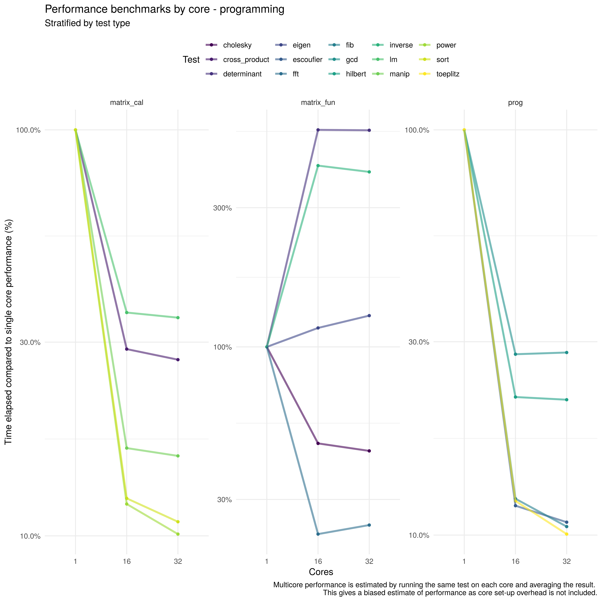
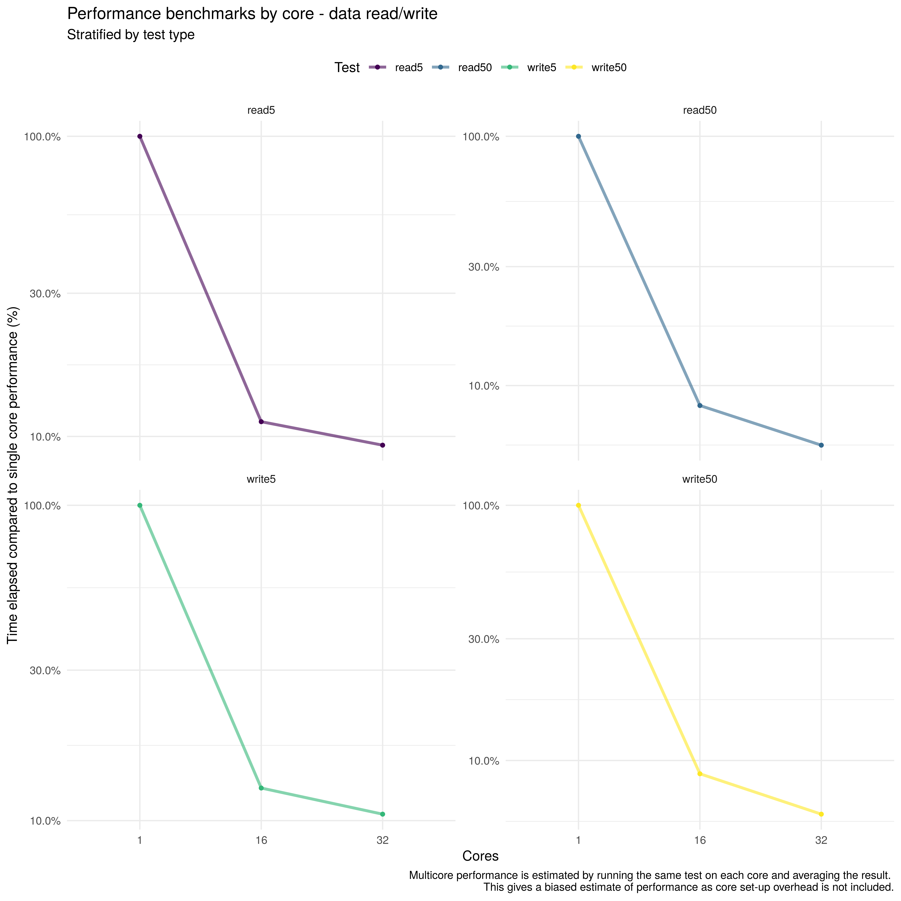

Why?
I recently built out a new workstation and have done some benchmarking using xgboost via h2o. In this post I am using the benchmarkme package to get another perspective on performance. Note: The benchmarkme package appears to have some issues when it comes to plotting benchmarks. I ended up having to drop them entirely from this post.
The main thing that I am interested in checking is the performance trade-off of enabling simultaneous multithreading (i.e Hyper-threading for Intel CPUs). In thexgboost benchmarks multithreading did nothing to improve performance - which reflected my everyday experience. This post represents a final check before turning it off and using the increased thermal overhead for additional real core overclocking.
Package set-up
The code in this post is loosely based on that used in this recent post. pacman is used for package management and the tidyverse is dragooned, as usual, for data munging and visualisation.
Run benchmarks
The code below checks the system is discoverable and then runs the benchmarks of interest in a tidy manner.
- Get system details
## Get Ram
get_ram()## 33.7 GB## Get CPU
get_cpu()## $vendor_id
## [1] "AuthenticAMD"
##
## $model_name
## [1] "AMD Ryzen Threadripper 1950X 16-Core Processor"
##
## $no_of_cores
## [1] 32- Run benchmarks
## Cached manually to avoid rerunning on knit/cache issue - does anyone have a nice package recommendation for this?
if (!file.exists("../../static/data/workstation-benchmark/benchmarkme.rds")) {
benchmarks <- tibble(cores = c(1, 16, 32)) %>%
mutate(std = map(cores, ~ benchmark_std(cores = .), runs = 3, verbose = FALSE),
io = map(cores, ~ benchmark_io(cores = .), runs = 3, verbose = FALSE))
saveRDS(benchmarks, "../../static/data/workstation-benchmark/benchmarkme.rds")
}else{
benchmarks <- readRDS( "../../static/data/workstation-benchmark/benchmarkme.rds")
}
benchmarks## # A tibble: 3 x 3
## cores std io
## <dbl> <list> <list>
## 1 1 <ben_results [45 × 6]> <ben_results [12 × 6]>
## 2 16 <ben_results [45 × 6]> <ben_results [12 × 6]>
## 3 32 <ben_results [45 × 6]> <ben_results [12 × 6]>Note: It looks like resource use isn’t handled very cleanly in benchmarkme. Looking at the screenshot below (fom the 16 core benchmark) we see that all cores are actually maxed out - including virtual cores - and there are multiple old jobs still active.
Load according to htop whilst running the 16 core test.
Visualise
Set-up
As I am really interested in comparing the performance of my system, rather than comparing it to other systems, I needed to develop a customised plot. The code below does this by taking the mean of each test, dividing by the single core run-time, and then plotting split by test type, the number of cores, and test.
plot_benchmark <- function(df){
df %>%
select(-cores1) %>%
mutate(elapsed_core_avg = elapsed / cores) %>%
group_by(test, cores, test_group) %>%
summarise(elapsed_core_avg = mean(elapsed_core_avg , na.rm = TRUE)) %>%
group_by(test) %>%
arrange(cores) %>%
mutate(cores = factor(cores)) %>%
mutate(elapsed_over_max = elapsed_core_avg / first(elapsed_core_avg)) %>%
mutate(Test = test) %>%
ggplot(aes(x = cores, y = elapsed_over_max, col = Test, group = Test)) +
geom_point(size = 1.2) +
geom_line(size = 1.1, alpha = 0.6) +
theme_minimal() +
facet_wrap(~ test_group, scales = "free_y") +
scale_y_log10(labels = scales::percent) +
theme(legend.position = "top") +
scale_color_viridis_d() +
labs(x = "Cores",
y = "Time elapsed compared to single core performance (%)",
subtitle = "Stratified by test type",
caption = "Multicore performance is estimated by running the same test on each core and averaging the result.
This gives a biased estimate of performance as core set-up overhead is not included.")
}Programming benchmark
The impact of multiple cores appeared to vary depending on the test type. All matrix calculations and programming tests showed a clear speed up when using 16 cores over a single core but this speed-up varied between 70% and 85%. For matrix functions the picture was less clear with 3 tests performing worse when using 16 cores vs. a single core. In general, there appears to be, at most, a marginal improvement from using 32 cores (with 16 virtual) over 16 cores. However, it is likely that this does not represent the full picture as it does not seem that benchmarkme includes multicore overheads (i.e from core set-up, merging results etc).
benchmarks %>%
unnest(std) %>%
plot_benchmark()+
labs(title = "Performance benchmarks by core - programming")
Read/write benchmark
The impact of multiple cores is more consistently beneficial here, with each increase in the number of cores resulting in improved performance. This may be because the cores were not saturated by the processing workload so a linear speed up was possible. This performance improvement would likely increase as long as there was sufficient read/write bandwidth on the SSD.
benchmarks %>%
unnest(io) %>%
plot_benchmark()+
labs(title = "Performance benchmarks by core - data read/write")
Summary
In this post, I have explored multicore performance using the benchmarkme package. I found that increasing the number of real cores improved performance in the majority of cases for both programming, and read/write tests. For programming tests, there was little evidence that using virtual cores led to a performance improvement but there was a clear benefit for read/write tests. This may be because the read/write tests did not use a complete CPU core of processing and so multiple jobs could be run at once. Unfortunately, these findings may not be that reliable as it appears that benchmarkme tests multicore performance by running each test on each core. This ignores the overhead from setting up multiple cores, transferring data, and merging results. In some circumstances, this overhead can outweigh any benefit of using multiple cores.
Based on the findings here, and from my previous benchmarking post, I think it is fairly clear that most of the time virtual cores are really adding very little. When you consider that for nearly comparable performance double the RAM is required they appear even less attractive. Obviously I could keep benchmarking but I think it may be time to turn off multithreading, ramp up the CPU clock speed - BIOS fun here we come- and finally start getting some work done!